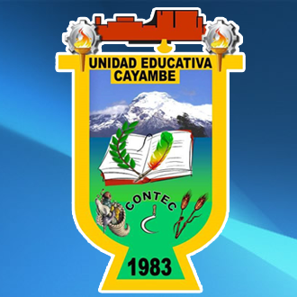
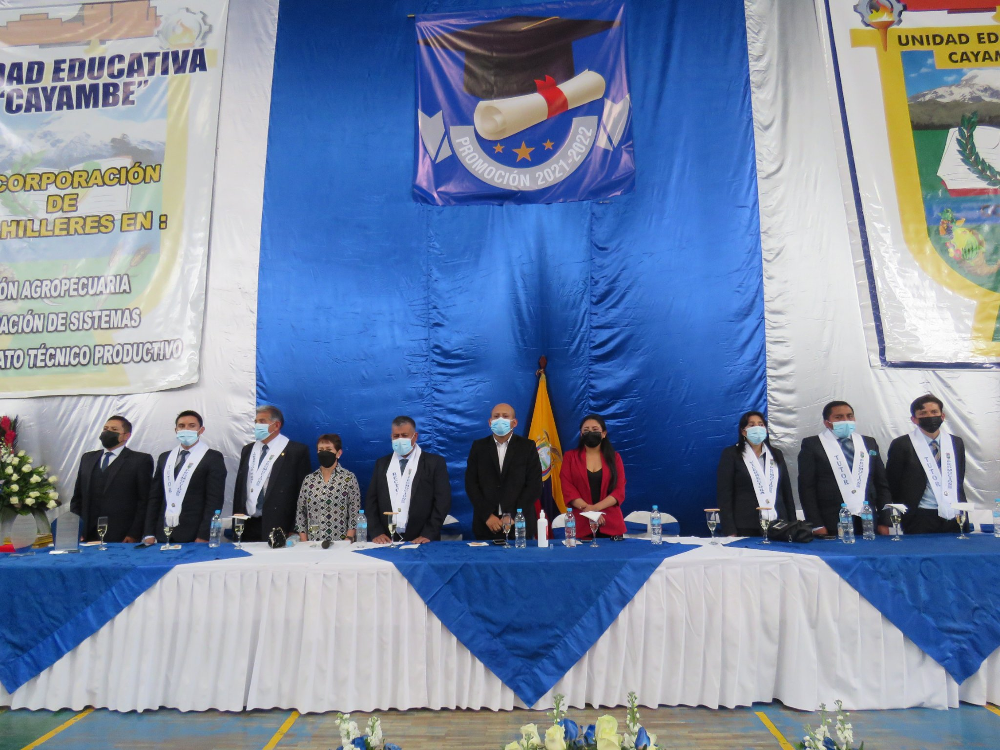
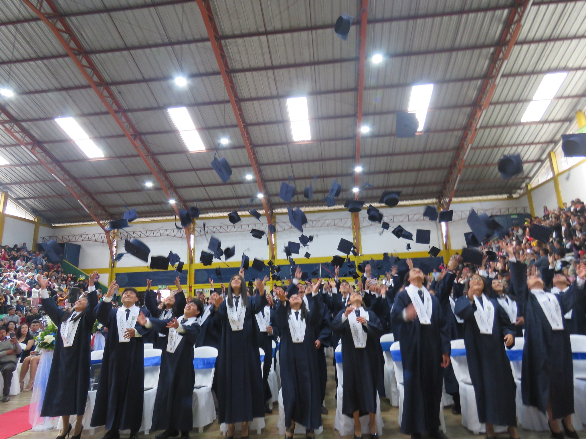

Inicio
Ofertas
Personal administrativo
Alumnos |
Bienvenidos a la Unidad Educativa "Cayambe"
MISIÒN
Es formar personas técnicamente competentes que puedan satisfacer las necesidades de la sociedad con una sólida formación científica y técnica, para que puedan integrarse inmediatamente al proceso productivo del país a través de un trabajo responsable o cursar estudios superiores en universidades y escuelas politécnicas. El programa educativo que ofrece la Escuela Técnica Nacional 'Cayambe' está abierto a jóvenes, extranjeros y todos los grupos residentes en las Islas Caimán que quieran recibir una educación, sin ningún sesgo de origen social o económico, religión, sexo o raza .

VISIÒN
Preparar y formar ciudadanos conscientes y con alta calidad científica y técnica; dispuestos a integrarse al proceso productivo, aplicando sus valores físicos, morales e intelectuales, es decir, nuestra organización brindará especialistas talentosos y de fuerte personalidad.
Lograr unidad y alineación multifuncional entre los fundadores del Instituto para crear un grupo de personas comprometidas a trabajar en beneficio de los estudiantes a través de la capacitación continua de todos los que creamos la UNIDAD EDUCATIVA CAYAMBE

VALOR
El colegio respeta el desarrollo psicológico de los estudiantes, sus diferencias individuales y promueve la enseñanza de valores humanísticos como eje integral del currículo; a saber: lealtad, respeto, responsabilidad, solidaridad, honestidad, libertad de pensamiento, tolerancia, comprensión, humildad, hermandad y amistad; Los valores inculcados diariamente en momentos culturales y cívicos se promueven como actividades permanentes en el desarrollo académico.
Regresar |